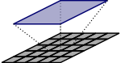
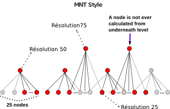

| NNGraph.pm | |
| ROK4:: | |
| Class methods | |
| defineScripts | Create all ROK4::PREGENERATION::Script’s to generate the NNGraph pyramid. |
| closeScripts | Close all ROK4::PREGENERATION::Script’s stream. |
| Constructors | |
| new | NNGraph constructor. |
| _load | Determines all nodes from the bottom level to the top level, thanks to the data source. |
| Nodes determination methods | |
| identifyBottomNodes | Calculate all nodes in bottom level concerned by the datasource (tiles which touch the data source extent). |
| identifyAboveNodes | Calculate all nodes in above levels. |
| Compute methods | |
| computeYourself | Browse graph and write commands in different scripts. |
| containsNode | Returns a boolean : TRUE if the node belong to this tree, FALSE otherwise (if a parameter is not defined too). |
| Getters - Setters | |
| getPyramid | |
| getDataSource | |
| getCoordTransPyramidDatasource | |
| getTopID | |
| getBottomID | |
| getTopOrder | |
| getBottomOrder | |
| isLevelEmpty | Returns a boolean, precise if level is empty. |
| getBbox | |
| updateBBox | Compare provided and stored extrems coordinates and update values. |
(see libperlauto/ROK4_Core_NNGraph.png)
Representation of a “nearest neighbour” pyramid : pyramid’s image = ROK4::BE4::Node.
To generate this kind of graph, we use :
=> jobNumber x levelNumber + 1 scripts
Organization in the Forest scripts’ array :
Link between a node and his children or his father is not trivial. It is calculated and store in the ROK4::BE4::Node object.
use ROK4::PREGENERATION::NNGraph; # NNGraph object creation my $objNNGraph = ROK4::PREGENERATION::QTree->new($objForest, $objDataSource); ... # Fill each node with computing code $objNNGraph->computeYourself();
| pyramid | ROK4::Core::PyramidRaster - Pyramid linked to this tree. |
| datasource | ROK4::PREGENERATION::Source - Data source to use to define bottom level nodes and generate them. |
| ct_source_pyramid | <Geo::OSR::CoordinateTransformation> - Coordinate transformation from datasource srs to pyramid srs |
| ct_pyramid_source | <Geo::OSR::CoordinateTransformation> - Coordinate transformation from pyramid srs to datasource srs |
| bbox | double array - Datasource bbox, [xmin,ymin,xmax,ymax], in TMS’ SRS |
| nodes | ROK4::BE4::Node hash - Structure is: |
level1 => {
c1_r2 => n1,
c2_r2 => n2,
c3_r2 => n3, ...}
level2 => {
c1_r2 => n4,
c2_r2 => n5, ...}
cX : node's column
rX : node's row
nX : <ROK4::BE4::Node>| scripts | ROK4::PREGENERATION::Script hash - The same for all QTree of the ROK4::PREGENERATION::Forest. |
| bottomID | string - Bottom level identifiant |
| topID | string - Top level identifiant |
| Class methods | |
| defineScripts | Create all ROK4::PREGENERATION::Script’s to generate the NNGraph pyramid. |
| closeScripts | Close all ROK4::PREGENERATION::Script’s stream. |
| Constructors | |
| new | NNGraph constructor. |
| _load | Determines all nodes from the bottom level to the top level, thanks to the data source. |
| Nodes determination methods | |
| identifyBottomNodes | Calculate all nodes in bottom level concerned by the datasource (tiles which touch the data source extent). |
| identifyAboveNodes | Calculate all nodes in above levels. |
| Compute methods | |
| computeYourself | Browse graph and write commands in different scripts. |
| containsNode | Returns a boolean : TRUE if the node belong to this tree, FALSE otherwise (if a parameter is not defined too). |
| Getters - Setters | |
| getPyramid | |
| getDataSource | |
| getCoordTransPyramidDatasource | |
| getTopID | |
| getBottomID | |
| getTopOrder | |
| getBottomOrder | |
| isLevelEmpty | Returns a boolean, precise if level is empty. |
| getBbox | |
| updateBBox | Compare provided and stored extrems coordinates and update values. |
sub defineScripts
Create all ROK4::PREGENERATION::Script’s to generate the NNGraph pyramid. They are stored in the ROK4::PREGENERATION::Forest instance.
| scriptInit | string - Shell function to write into each script |
| pyramid | ROK4::Core::PyramidRaster - NNGraph Pyramid to generate |
sub closeScripts
Close all ROK4::PREGENERATION::Script’s stream.
| scripts | ROK4::PREGENERATION::Script hash - Scripts pool to close |
sub identifyAboveNodes
Calculate all nodes in above levels. We generate a above level node if one or more children are generated.
We have to use “nearest neighbour” interpolation with this kinf of graph. So (beacause pixel’s center are aligned), we keep the value from the below level. Goal is to always have values from source data, no average.
When we load the TMS, we precise links between different levels (source and targets). For each level, we identify above nodes (thanks to bounding boxes) which will be generated from the node. We store all this parent-child relations.

sub containsNode
Returns a boolean : TRUE if the node belong to this tree, FALSE otherwise (if a parameter is not defined too).
| level | string - Level ID of the node we want to know if it is in the nngraph. |
| i | integer - Column of the node we want to know if it is in the nngraph. |
| j | integer - Row of the node we want to know if it is in the nngraph. |
Create all ROK4::PREGENERATION::Script’s to generate the NNGraph pyramid.
sub defineScripts
Close all ROK4::PREGENERATION::Script’s stream.
sub closeScripts
NNGraph constructor.
sub new
Determines all nodes from the bottom level to the top level, thanks to the data source.
sub _load
Calculate all nodes in bottom level concerned by the datasource (tiles which touch the data source extent).
sub identifyBottomNodes
Calculate all nodes in above levels.
sub identifyAboveNodes
Browse graph and write commands in different scripts.
sub computeYourself
Returns a boolean : TRUE if the node belong to this tree, FALSE otherwise (if a parameter is not defined too).
sub containsNode
sub getPyramid
sub getDataSource
sub getCoordTransPyramidDatasource
sub getTopID
sub getBottomID
sub getTopOrder
sub getBottomOrder
Returns a boolean, precise if level is empty.
sub isLevelEmpty
sub getBbox
Compare provided and stored extrems coordinates and update values.
sub updateBBox